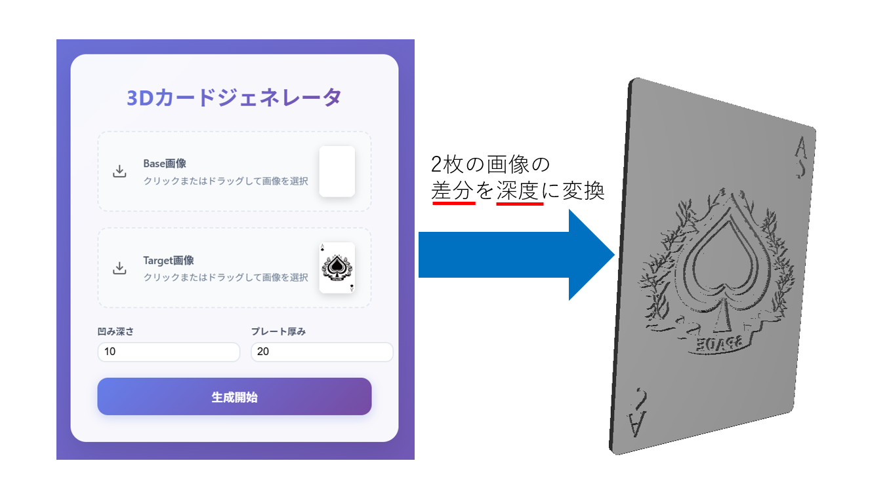

作ってみた
VRが好きで，ミニゲームやインタラクティブなオブジェクト等を作っています

無限ランゲーム
VRならではの要素を加えたかったので, 実際の体の動きとゲーム内の動きを同期させています.

花畑を出す魔法
某アニメの主人公が一番好きな魔法の再現です．魔法の杖を振ることで花が咲きます.また、魔法の杖はBlenderで作成しました.

どこかにいけそうなドア
猫型のロボットがくれそうなドアです. Unityの深度バッファーを変更することで作りました．
MR的あて
シンプルな的あてを作成しました．的は，壁や天井, 床から飛び出してきているように見えます.
インタラクティブな部屋
物体をつかめたり，窓を割ったりすることが出来る部屋を作成しました. オブジェクトは銃以外, 全て自作しました.

ストレスを可視化できるフグ型膨張オブジェ
100 Program(第7期)参加時に作成しました。
Fitbitから心拍揺らぎを取得し, 簡易的にリラックス値を計算し, ストレスが溜まると膨張するフグのオブジェクトです. 私は, 心拍揺らぎを取得し, Firebaseにデータを保存する部分を担当しました.
動画は, チームのリーダーが作成しました.
Stress Puffer
— はたけ/Furukawa (@HATAKE55555) March 20, 2025
A tiny pufferfish companion that breathes with you...
AIチェキ
兵庫県立大学理学部キャンパスの学園祭であるテクノフェスタで『AIチェキ』を販売しました.
チームメンバーは私が所属している研究室の修士1回生で構成されています.
この作品は表面が通常の画像，裏面が生成AIで作成された画像となっています. また, QRコードを読み取ることで元画像と生成AIのデータを取得することが可能となっています.
私は使用技術の選定及び，生成画像のパラメータ調整を担当しました．